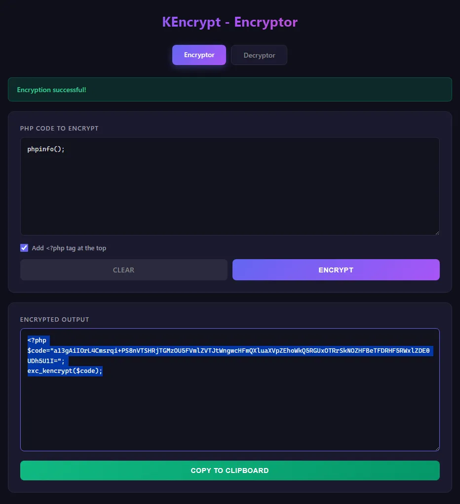
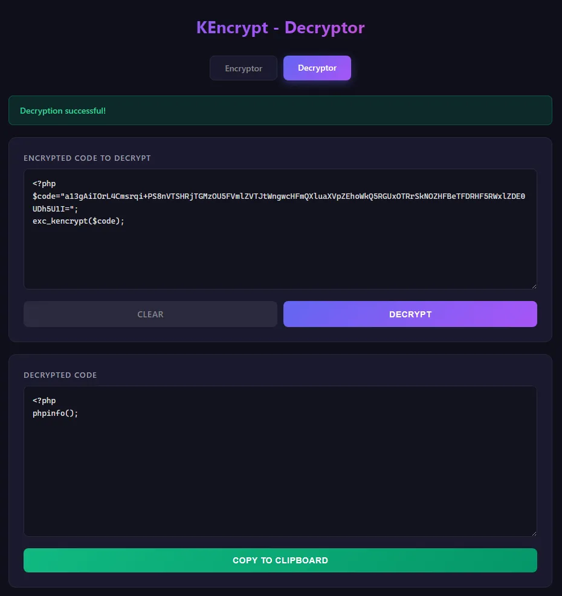

KEncrypt: PHP Source Code Protector.
A custom PHP extension that helps protect source code by encrypting payloads while still allowing native server-side execution.
Protecting PHP Logic in Distributed Environments.
Shipping raw PHP source code can expose business logic and sensitive implementation details. KEncrypt was created to secure distributable PHP projects and reduce intellectual-property risk.
The extension workflow allows developers to convert plain PHP into protected payloads, then execute those payloads through a dedicated runtime function.
Native Runtime Execution
Protected files still run directly on supported PHP environments.
Developer Utility Tooling
Includes local encrypt/decrypt interface to streamline payload generation.
Targeted Platform Support
Built for Windows x64 and PHP 8 thread-safe configurations.
Source Privacy
Delivered files avoid exposing original application internals in production.

Encrypt, Deploy, Execute
- Enable the KEncrypt extension in php.ini on the target server.
- Encrypt source using the local utility interface.
- Deploy protected payload files instead of plaintext business logic.
- Execute the encrypted payload at runtime through the extension function.
Encryptor and Decryptor Interfaces
Encryptor interface used to generate protected payloads.

Decryptor interface for controlled reverse processing and tests.
A Practical Step Toward PHP IP Protection.
KEncrypt demonstrates low-level PHP extension work combined with product-facing tooling to make source protection practical for real deployment pipelines.